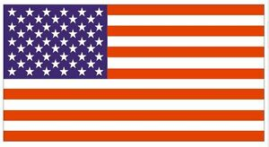
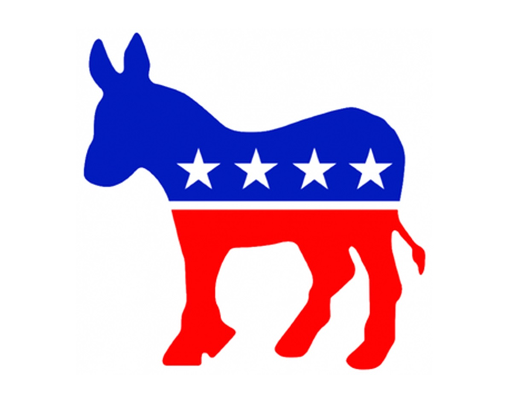

Biography
Hillary Clinton was born in in 1947 in Chicago, Illinois. Her parents were Hugh Rodman and Dorothy Emma Howell Rodman. Hillary has two younger brother, Hugh Jr. and Anthony. At Wellesley College, Hillary was a political science major and she was voted class president. After college, she attended Yale Law School where she met her future husband, Bill Clinton. Hillary married Bill on October 11, 1975. Bill and Hillary had their daughter Chelsea Clinton in 1980.
When Bill was elected president in 1992, Hillary became the first lady. At this time, she was the head of the Task Force on National Health Reform, however this commission did not make progress through Congress. In 1999, Hillary won the U.S. senate seat for the state of New York becoming the first female senator from the state of New York. After Obama was elected president, Hillary was appointed U.S. Secretary of State. Then, in 2016, Hillary ran for President of the US winning the popular vote but losing the elecctoral college votes.